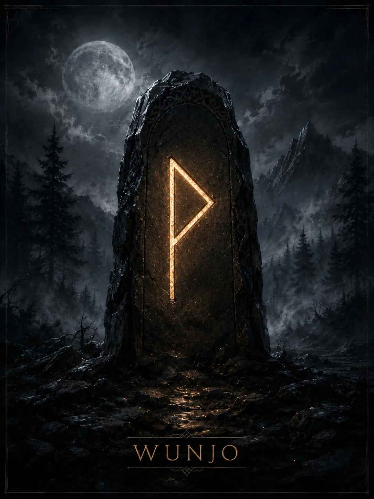

Руна удовлетворения, гармонии и чувства, что человек находится «на своём месте». Это не случайная удача, а совпадение результата с внутренним ожиданием.
Краткая суть
Руна удовлетворения, гармонии и чувства, что человек находится «на своём месте». Это не случайная удача, а совпадение результата с внутренним ожиданием.
Историческая традиция
Англосаксонская Wynn связана с радостью и благополучием. В современном эзотерическом чтении Wunjo стала символом успешного завершения, согласия группы и эмоционального комфорта.
- Ключевые значения: радость, гармония, успех, удовлетворение, согласие, комфорт, праздник, завершение
Современная мантика
Мантические значения относятся к современной рунической практике.
- Положительное проявление: Удачное завершение, приятная новость, согласие, облегчение, ощущение успеха.
- Негативное проявление: Разочарование, поверхностная эйфория, зависимость от одобрения, попытка не замечать проблему ради комфорта.
- Совет: Заметь, что уже получилось, и укрепи то, что приносит устойчивое удовлетворение.
- Предупреждение: Не подменяй реальное благополучие картинкой «всё прекрасно».
- Итог ситуации: Благоприятный исход, примирение, радость от результата.
Психологическое состояние
Эмоциональная интеграция и чувство внутреннего согласия; в тени — избегание неприятных тем.
Духовное значение
Умение принять радость как результат согласованности, а не как побег от трудностей.
Прямое и перевёрнутое положение
Мантическая трактовка и работа с перевёрнутыми положениями относятся к современной рунической практике. Для Старшего Футарка не сохранилось древнего руководства, которое задавало бы такой способ гадания как единственно правильный. Перевёрнутая Wunjo в современных школах — разочарование, временная потеря гармонии, конфликт ожиданий и реальности.
Отличия трактовок разных школ
Современная мантика близка к историческому имени «радость», поэтому разрыв между слоями здесь меньше, чем у многих других рун.
Итог
Руна удовлетворения, гармонии и чувства, что человек находится «на своём месте». Это не случайная удача, а совпадение результата с внутренним ожиданием.
Финансы
удовлетворительный результат, премия, удачная покупка; не столько огромный рост, сколько ощущение достаточности.
Работа
признание, хороший коллектив, успешное завершение этапа, удовольствие от результата.
Отношения
радость, примирение, эмоциональная совместимость, приятное совместное время.
Семья и быт
праздник, гостеприимство, гармоничная домашняя атмосфера.
Руна как характеристика человека
Оптимистичный, дружелюбный человек, стремящийся поддерживать атмосферу согласия.
- Мысли: ищет благоприятный вариант и хочет закончить конфликт.
- Чувства: тепло, удовольствие, симпатия, облегчение.
- Действия: пойдёт навстречу, поздравит, предложит приятную встречу или закрепит успех.
Современное магическое значение
Это современная эзотерическая практика, а не исторически подтверждённая традиция.
- Современная магическая трактовка: гармонизация, создание благоприятного эмоционального фона, закрепление успешного результата.
- Задачи: примирение, удовольствие от работы, успех мероприятия, улучшение атмосферы.
- Усиливает: согласие, оптимизм, ощущение завершённости.
- Ослабляет: напряжение, отчуждение, уныние.
- Риск: «загладить» симптом конфликта, не решив его причину.
Руна в формулах и ставах
Wunjo обычно ставят как желаемый благоприятный итог: Gebo+Wunjo — гармоничный союз; Jera+Wunjo — заслуженный успешный результат; Ansuz+Wunjo — хорошая новость.
Эзотерическая трактовка
В современной эзотерической трактовке
В диагностике перевёрнутую или ослабленную Wunjo иногда трактуют как искусственно нарушенную гармонию.
Возможное бытовое объяснение
Альтернативное объяснение
Бытовая альтернатива: конфликт, усталость от ситуации, несбывшиеся ожидания, неблагоприятная социальная атмосфера.
Характерные сочетания
- Wunjo + Jera: радость от заслуженного результата.
- Wunjo + Hagalaz: резкая смена комфорта; освобождение через кризис.
- Wunjo + Gebo: взаимное удовольствие от союза.
Руна в формулах и ставах
Wunjo обычно ставят как желаемый благоприятный итог: Gebo+Wunjo — гармоничный союз; Jera+Wunjo — заслуженный успешный результат; Ansuz+Wunjo — хорошая новость.
Мантические, магические и диагностические значения относятся к современной рунической практике. Историческая часть опирается на рунические поэмы и эпиграфику. Материалы носят справочный и развлекательный характер.